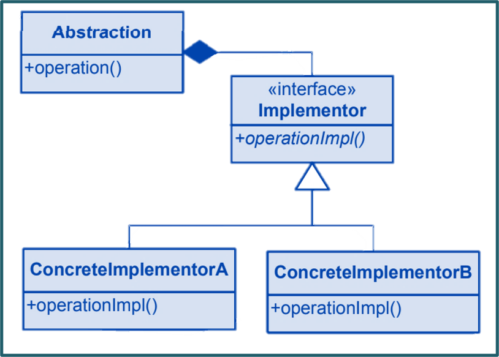

The Proxy pattern is a design pattern in software engineering that provides a surrogate or placeholder for another object to control its access. It's used when you want to add an additional layer of control or functionality to an object's behavior without modifying its core implementation. Proxies can be used to achieve various goals, such as lazy initialization, access control, logging, and caching.Learn more.
Key Characteristics
Key characteristics of the pattern include:
Real Subject: The pattern involves a "Real Subject," which is the actual object being represented or controlled by the proxy.
Proxy: The "Proxy" acts as an intermediary between the client and the real subject. It can control access to the real subject and add additional functionality.
Same Interface: Both the proxy and the real subject implement the same interface, ensuring that clients can interact with both interchangeably.
Types of Proxies: There are different types of proxies, including:
Virtual Proxy: Defers the creation or initialization of the real subject until it's actually needed.
Remote Proxy: Represents an object that resides in a different address space, such as a remote server.
Protection Proxy: Controls access to the real subject by enforcing access permissions or additional security checks.
Logging Proxy: Adds logging functionality to track interactions with the real subject.
Cache Proxy: Stores the results of expensive operations and returns cached results when the same operation is requested again.
Class Diagram

Example
A real-world example of the Proxy pattern can be found in image loading and caching systems in web applications. When a web page needs to display images, it can utilize proxy objects to efficiently manage the loading and caching of these images.
Suppose you have a web page that displays various images, and you want to optimize the loading process by using a proxy that caches the images after they are loaded for the first time.